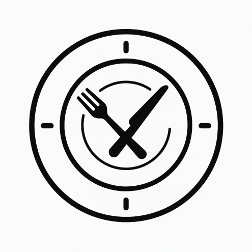

16:8 fastning
16:8 fasten betyder, at man spiser inden for et vindue på otte timer og faster de resterende seksten timer i døgnet. Metoden er populær, fordi den er let at indpasse i hverdagen og kan give mere stabil energi.
Har du hørt om den banebrydende forskning om at faste?
![[img: hero]](images/H1_Billede_Frame-1_Sund_Gron.svg)
Faster du nogle gange?
16:8 fasten betyder, at man spiser inden for et vindue på otte timer og faster de resterende seksten timer i døgnet. Metoden er populær, fordi den er let at indpasse i hverdagen og kan give mere stabil energi.
24 timers faste betyder, at man springer et helt døgns måltider over, for eksempel fra aftensmad den ene dag til aftensmad den næste. Det kan give kroppen et “reset”, men kræver mere viljestyrke og kan føles udfordrende.
48 timers faste betyder, at man undlader at spise i to hele døgn ad gangen. Det kan aktivere dybere processer i kroppen, men er meget krævende og anbefales kun til erfarne.
Forskning om at faste?
Faste er en populær livsstil, der handler om at give kroppen pauser fra mad. Den mest udbredte form er 16:8, hvor man faster i 16 timer og spiser i et 8-timers vindue, typisk fra klokken 12 til 20. Denne metode er forholdsvis let at passe ind i hverdagen og kan give mere stabil energi, men den kan føles svær, hvis man er vant til morgenmad. En anden metode er 24 timers faste, hvor man springer et helt døgns mad over, for eksempel fra aftensmad den ene dag til aftensmad den næste. Det kan give kroppen et reset og styrke viljestyrken, men det kræver mere disciplin og kan føre til træthed og hovedpine. Den mest krævende model er 48 timers faste, hvor man undlader at spise i to hele døgn. Det kan aktivere dybere processer i kroppen, men det kræver stor disciplin og anbefales kun til erfarne, der er vant til faste. Kort fortalt er 16:8 den mest hverdagsvenlige, 24 timers faste kan fungere som et ugentligt reset, mens 48 timers faste kun er egnet for øvede. Kilde: Harvard Health Publishing
